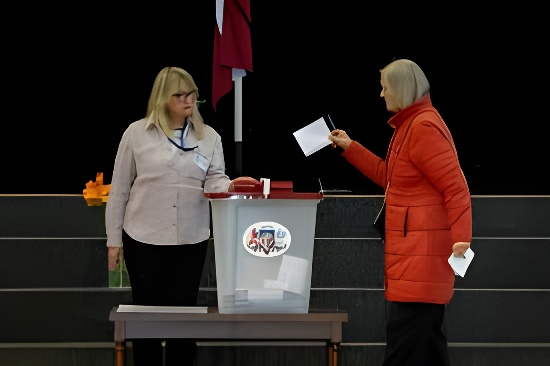

Le 3 octobre 2026, environ 1,5 million de Lettons étaient appelés à élire les 100 sièges de la Saeima. Selon un dépouillement presque complet, la Liste unie du Premier ministre Andris Kulbergs, centriste et proukrainienne, l'emporte nettement avec environ 35 % des voix, devant les populistes de La Lettonie d'abord et de Pouvoir souverain. Mais deux de ses partenaires de coalition reculent, ce qui promet de longues négociations pour former le prochain gouvernement.
Le samedi 3 octobre 2026, les Lettons étaient appelés aux urnes, de 8 h à 20 h, pour élire les 100 députés de la 15e Saeima, le Parlement monocaméral du pays. Quatorze listes, regroupant 1 428 candidats, étaient en lice pour environ 1,5 million d'électeurs. Le vote anticipé, ouvert la semaine précédente, avait attiré plus de 11 % des inscrits avant même le jour du scrutin, vote par correspondance compris. Le président Edgars Rinkēvičs a voté dans la journée ; la crainte d'ingérences de la Russie ou de la Biélorussie ne s'était pas vérifiée en cours de journée, selon la télévision publique LSM.
La campagne a porté sur le coût de la vie, les bas salaires, les tensions sur le système de santé et le déclin démographique, mais aussi sur la sécurité face à la Russie. La Lettonie, le plus pauvre des trois États baltes, consacre désormais près de 5 % de son PIB à la défense depuis l'invasion à grande échelle de l'Ukraine en 2022.
La vie politique lettone est très fragmentée : les partis dépassent rarement 20 % des voix et les gouvernements reposent presque toujours sur des coalitions. Andris Kulbergs, issu de la Liste unie, dirige le gouvernement depuis mai 2026, après la chute de la coalition précédente à la suite d'une crise liée à des intrusions de drones sur le territoire letton (voir notre article sur les drones en Europe). Sa coalition sortante réunit la Liste unie, Nouvelle Unité, l'Union des Verts et des Paysans et l'Alliance nationale.
Date prévue de la première session de la 15e Saeima.
Dépouillement quasi achevé : la Liste unie à 35,3 %, six listes au-dessus du seuil.
Jour du scrutin : la sortie des urnes donne la Liste unie à 35,6 % ; participation de 51,7 %.
Vote anticipé dans tout le pays.
Accord de principe sur une coalition à quatre autour d'Andris Kulbergs.
Selon les résultats préliminaires publiés par LSM le 4 octobre à 7 h 30 (1 007 bureaux sur 1 059 dépouillés), le parti du Premier ministre arrive très largement en tête, à 35,3 % des voix, contre 11,0 % en 2022. Six listes sont en passe d'entrer à la Saeima ; l'Union des Verts et des Paysans, à 4,5 %, reste sous le seuil à ce stade. Les résultats officiels préliminaires étaient attendus dimanche, et les chiffres peuvent encore bouger.
| Liste | Voix |
|---|---|
| Liste unie (AS) | 35,3 % — parti du Premier ministre |
| La Lettonie d'abord | 13,1 % — populiste, 6,3 % en 2022 |
| Pouvoir souverain | 11,8 % — populiste |
| Alliance nationale | 9,0 % — coalition sortante |
| Les Progressistes | 7,4 % |
| Nouvelle Unité | 6,3 % — coalition sortante |
| Verts et Paysans | 4,5 % — sous le seuil de 5 % |
« C'est remarquablement bon. Je ne m'attendais pas à un tel résultat. »
— Andris Kulbergs, au siège de la Liste unie à Riga, 3 octobre 2026 (traduction)La Liste unie, loin de la majorité absolue de 51 sièges, devra former une nouvelle coalition, d'autant que deux de ses alliés, Nouvelle Unité et les Verts et Paysans, reculent. Les signaux sont contradictoires : Andris Kulbergs avait déclaré refuser toute coopération avec les partis prorusses en citant La Lettonie d'abord, alors que cette formation populiste, décrite par Al Jazeera comme pro-ukrainienne, est évoquée comme partenaire possible. La plupart des autres listes ont en revanche exclu de s'allier à Pouvoir souverain, qui dit vouloir la victoire de l'Ukraine mais préférer dépenser l'argent au profit des Lettons ; ses détracteurs le jugent prorusse.
Le scrutin conforte la ligne proeuropéenne et proukrainienne de Riga : le principal parti est celui d'un Premier ministre qui assume ce cap, et aucune force remettant en cause l'appui à Kyiv ne s'impose. Mais la victoire de la Liste unie est aussi celle d'un homme arrivé au pouvoir il y a cinq mois, dans un paysage éclaté où La Lettonie d'abord a presque doublé son score de 2022 et où deux partis populistes réunissent près d'un quart des voix selon les résultats préliminaires.
La participation, à 51,7 %, semble marquer un nouveau plus bas pour des législatives lettones, selon LSM. Restent à connaître la répartition définitive des sièges, le sort de l'Union des Verts et des Paysans face au seuil de 5 % et, surtout, la composition de la future coalition, dont les négociations s'annoncent longues et complexes.